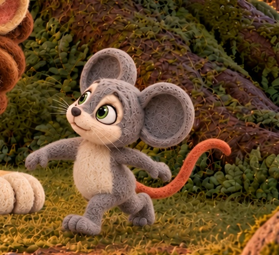
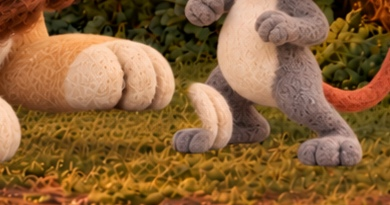
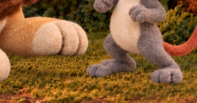

Before


Two GPT edits, no additional attempts. Descending candidate and approval records unchanged. Compare native images by clicking.
Milo body references: canonical, passing-step pose, worried scene, path arrival. New torso/leg depiction remains for owner comparison; improvement is subtle.
Size [1672, 941]; SHA-256 f29e2cc10cc58c6f2a5270a2d5015cd8db672ac5eaead21dd7fc7762ab35fd59

The isolated cream paw remnant beside Milo lower body is absent. Real raised Leo paw remains visible; no new owner selection inferred.
Size [1671, 941]; SHA-256 b91112d67facfbd833acb59211fa6e26edc9c0040295f9c6a9f569292b187c1c




Original image bytes verified unchanged. Neither new image is selected. The returned ready image remains 1671 pixels wide; its exact framing/preservation gate is unresolved. No commits or pushes.